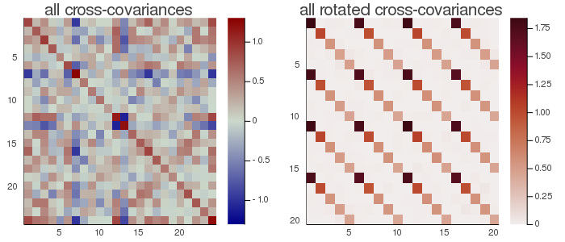

gMCA
Generalized Maximum Covariance Analysis (gMCA) is a multiple approximate joint diagonalization prodedure generalizing the maximum covariance analysis (MCA) to the situation $m>2$ (number of datasets), as for MCA with $k=1$ (one observation).
Let ${X_1,...,X_m}$ be a set of $m$ data matrices of dimension $n⋅t$, where $n$ is the number of variables and $t$ the number of samples, both common to all datasets. From these data matrices let us estimate
$C_{ij}=\frac{1}{T}X_iX_j^H$, for all $i,j∈[1...m]$, $\hspace{1cm}$ [gmca.1]
i.e., all covariance ($i=j$) and cross-covariance ($i≠j$) matrices.
The gMCA seeks $m$ matrices $F_1,...,F_m$ diagonalizing as much as possible all products
$F_i^H C_{ij} F_j$, for all $i≠j∈[1...m]$. $\hspace{1cm}$ [gmca.2]
If the MCA ($m=2$) diagonalizes the cross-covariance, this generalized model ($m>2$) diagonalizes all cross-covariance matrices.
alternative model for gMCA
The gMCA constructors also allow to seeks $m$ matrices $F_1,...,F_m$ diagonalizing as much as possible all products
$F_i^H C_{ij} F_j$, for all $i,j∈[1...m]$. $\hspace{1cm}$ [gmca.3]
As compared to model [gmca.2], this model diagonalizes the covariance matrices in addition to the cross-covariance matrices.
permutation for gMCA
As usual, the approximate diagonalizers $F_1,...,F_m$ are arbitrary up to a scale and permutation. In mGCA scaling is fixed by appropriate constraints. For the remaining sign and permutation ambiguities, Diagonalizations.jl attempts to solve them by finding signed permutation matrices for $F_1,...,F_m$ so as to make all diagonal elements of [gmca.2] or [gmca.3] positive and sorted in descending order.
Let
$λ=[λ_1...λ_n]$ $\hspace{1cm}$ [gmca.4]
be the diagonal elements of
$\frac{1}{m^2-m}\sum_{i≠j=1}^m(F_i^H C_{ij} F_j)$ $\hspace{1cm}$ [gmca.5]
and $σ_{TOT}=\sum_{i=1}^nλ_i$ be the total covariance.
We denote $\widetilde{F}_i=[f_{i1} \ldots f_{ip}]$ the matrix holding the first $p<n$ column vectors of $F_i$, for $i∈[1...m]$, where $p$ is the subspace dimension. The explained variance is given by
$σ_p=\frac{\sum_{i=1}^pλ_i}{σ_{TOT}}$, $\hspace{1cm}$ [gmca.6]
and the accumulated regularized eigenvalues (arev) by
$σ_j=\sum_{i=1}^j{σ_i}$, for $j=[1 \ldots n]$, $\hspace{1cm}$ [gmca.7]
where $σ_i$ is given by Eq. [gmca.6].
For setting the subspace dimension $p$ manually, set the eVar optional keyword argument of the gMCA constructors either to an integer or to a real number, this latter establishing $p$ in conjunction with argument eVarMeth using the arev vector (see subspace dimension). By default, eVar is set to 0.999.
Solution
There is no closed-form solution to the gMCA problem in general. Diagonalizations.jl implements the following iterative algorithms:
| Algorithm | Constraint | Reference |
|---|---|---|
| OJoB | $F$ orthogonal | Congedo et al (2011, 2012); Congedo (2013) |
Constructors
One constructor is available (see here below). The constructed LinearFilter object holding the gMCA will have fields:
.F: vector of matrices $\widetilde{F}_1,...,\widetilde{F}_m$ with columns holding the first $p$ eigenvectors in $F_1,...,F_m$, or just $F_1,...,F_m$ if $p=n$
.iF: the vector of the left-inverses of the matrices in .F
.D: the leading $p⋅p$ block of $Λ$, i.e., the elements [gmca.4] associated to the matrices in .F in diagonal form.
.eVar: the explained variance [gmca.6] for the chosen value of $p$.
.ev: the vector $λ$ [gmca.4].
.arev: the accumulated regularized eigenvalues, defined by Eq. [gmca.7].
Diagonalizations.gmca — Functionfunction gmca(𝐗::VecMat;
covEst :: StatsBase.CovarianceEstimator = SCM,
dims :: Into = ○,
meanX :: Into = 0,
algorithm :: Symbol = :OJoB,
fullModel :: Bool = false,
sort :: Bool = true,
init :: VecMato = ○,
tol :: Real = 0.,
maxiter :: Int = 1000,
verbose :: Bool = false,
eVar :: TeVaro = _minDim(𝐗),
eVarMeth :: Function = searchsortedfirst,
simple :: Bool = false)
Return a LinearFilter object.
Generalized Maximum Covariance Analysis of the set of $m$ data matrices 𝐗 using the given solving algorithm (OJoB by default).
If fullModel is true, the [gmca.3] problem here above is solved, otherwise (default), the [gmca.2] problem here above is solved.
If sort is true (default), the column vectors of the matrices $F_1,...,F_m$ are signed and permuted as explained here above in permutation for gMCA, otherwise they will have arbitrary sign and will be in arbitrary order.
A vector of matrices can be passed with the init argument in order to initialize the matrices $F_1,...,F_m$ to be found by the gMCA algorithm. If nothing is passed (default), matrices $F_i$ is initialized, following Congedo et al. (2011)🎓, with the eigevector matrix of
$\frac{1}{m}\sum_{j=1}^m C_{ij}C_{ij}^H$.
$tol$ is the tolerance for convergence of the solving algorithm. By default it is set to the square root of Base.eps of the nearest real type of the data input. This corresponds to requiring the relative change across two successive iterations of the average squared norm of the column vectors of $F$ to vanish for about half the significant digits. If the solving algorithm encounters difficulties in converging, try setting tol in between 1e-6 and 1e-3.
maxiter is the maximum number of iterations allowed to the solving algorithm (1000 by default). If this maximum number of iteration is attained, a warning will be printed in the REPL. In this case, try increasing maxiter and/or tol.
If verbose is true (false by default), the convergence attained at each iteration will be printed in the REPL.
eVar and eVarMeth are used to define a subspace dimension $p$ using the accumulated regularized eigenvalues of Eq. [gmca.7].
The default values are:
eVaris set to the minimum dimension of the matrices in𝐗eVarMeth=searchsortedfirst
If simple is set to true, $p$ is set equal to the dimension of the covariance matrices that are computed on the matrices in 𝐗, which depends on the choice of dims, and only the fields .F and .iF are written in the constructed object. This corresponds to the typical output of approximate diagonalization algorithms.
Examples:
using Diagonalizations, LinearAlgebra, PosDefManifold, Test
# Create data for testing the case k=1, m>1 #
# `t` is the number of samples,
# `m` is the number of datasets,
# `n` is the number of variables,
# `noise` must be smaller than 1.0. The smaller the noise,
# the more data are correlated.
function getData(t, m, n, noise)
# create m identical data matrices and rotate them by different
# random orthogonal matrices V_1,...,V_m
𝐕=[randU(n) for i=1:m] # random orthogonal matrices
X=randn(n, t) # data common to all subjects
# each subject has this common part plus a random part
𝐗=[𝐕[i]'*((1-noise)*X + noise*randn(n, t)) for i=1:m]
return 𝐗
end
t, m, n, noise = 20, 2, 6, 0.1
Xset=getData(t, m, n, noise)
Cx=(Xset[1]*Xset[1]')/t
Cy=(Xset[2]*Xset[2]')/t
Cxy=(Xset[1]*Xset[2]')/t
# check that for the case m=2 GMCA gives the same result as MCA
gm=gmca(Xset; simple=true)
m=mca(Cxy; simple=true)
@test (m.F[1]'*Cxy*m.F[2]) ≈ (gm.F[1]'*Cxy*gm.F[2])
# the following must be the identity matrix out of a possible sign ambiguity
@test abs.(m.F[1]'*gm.F[1]) ≈ I
@test abs.(m.F[2]'*gm.F[2]) ≈ Icase m>2
t, m, n, noise = 20, 4, 6, 0.1
Xset=getData(t, m, n, noise)
# gmca selecting subspace dimension allowing an explained variance = 0.9
gm=gmca(Xset, eVar=0.9)
# name of the filter
gm.name
𝒞=Array{Matrix}(undef, 1, m, m)
for i=1:m, j=1:m 𝒞[1, i, j]=(Xset[i]*Xset[j]')/t end
using Plots
# plot regularized accumulated eigenvalues
plot(gm.arev)
# plot the original cross-covariance matrices and the rotated
# cross-covariance matrices
# Get all products 𝐔[i]' * 𝒞[l, i, j] * 𝐔[j]
function _rotate_crossCov(𝐔, 𝒞, m, k)
𝒮=Array{Matrix}(undef, k, m, m)
@inbounds for l=1:k, i=1:m, j=1:m 𝒮[l, i, j]=𝐔[i]'*𝒞[l, i, j]*𝐔[j] end
return 𝒮
end
# Put all cross-covariances in a single matrix of dimension m*n x m*n for visualization
function 𝒞2Mat(𝒞::AbstractArray, m, k)
n=size(𝒞[1, 1, 1], 1)
C=Matrix{Float64}(undef, m*n, m*n)
for i=1:m, j=1:m, x=1:n, y=1:n C[i*n-n+x, j*n-n+y]=𝒞[k, i, j][x, y] end
return C
end
C=𝒞2Mat(𝒞, m, 1)
Cmax=maximum(abs.(C));
h1 = heatmap(C, clim=(-Cmax, Cmax), yflip=true, c=:bluesreds, title="all (mxm) cross-covariances")
𝒮=_rotate_crossCov(gm.F, 𝒞, m, 1)
S=𝒞2Mat(𝒮, m, 1)
Smax=maximum(abs.(S));
h2 = heatmap(S, clim=(0, Smax), yflip=true, c=:amp, title="all rotated cross-covariances")
📈=plot(h1, h2, size=(700,300))

In the figure here above, the rotated cross-covariance matrices have the expected strip-diagonal form, that is, each block $F_i^T\frac{1}{T}(X_iX_j^T)F_j$, for $i,j∈[1,...,m]$, is approximately diagonal. Each block is $5⋅5$ because setting eVar=0.9 the subspace dimension has been set to 5.